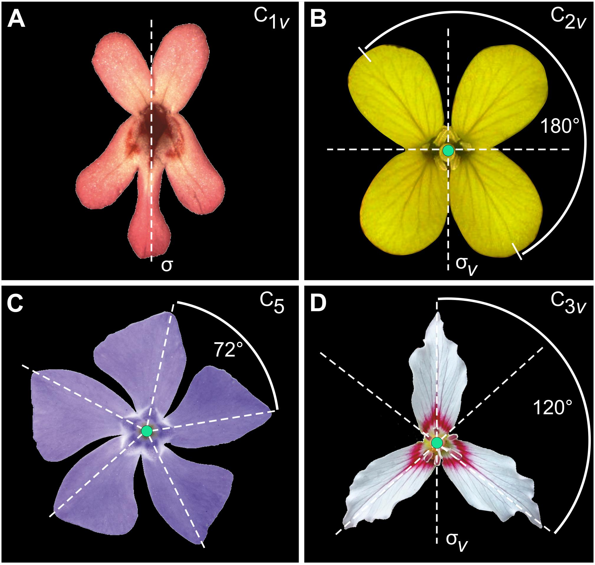
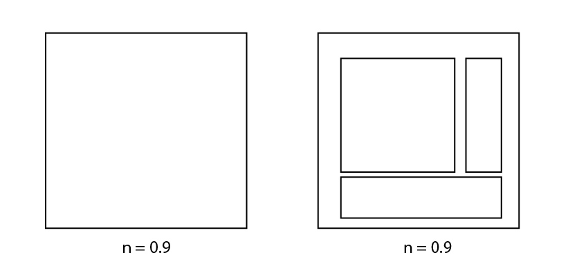
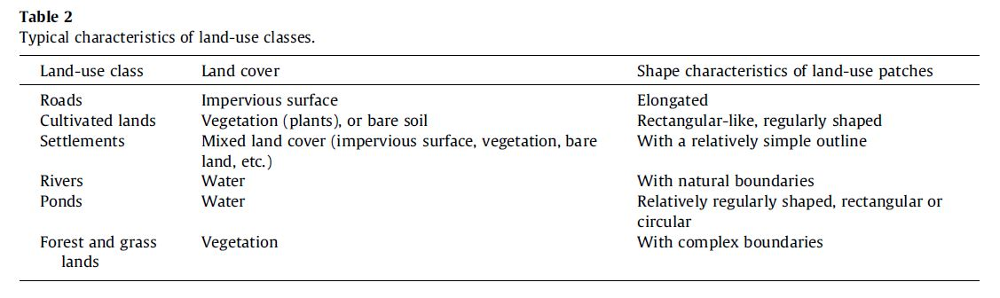
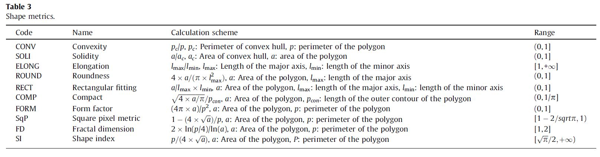

Morphology
Morphomerics
- Morphometrics is the quantitative analysis of form, both size and shape
- Performance of any shape metric depends on the quality of the original image and how well objects are preprocessed
- Shape descriptors describe specific characteristics regarding the geometry of a particular feature
Uses
- Pattern analysis in landscape ecology and geography
- Influences habitat viability for plants and animals
- Measure of urban sprawl
Plant Phenotyping

Morphometrics in Geomorphology

Basics - Size
- Area - quantity that expresses the extent of a two-dimensional region
- Perimeter - closed path that outlines a two dimensional shape
- Feret's diameter - measure of an object size along a specified direction.
Basics - The Circle
The circle is the most compact shape for a given Area.
An "Equal Area Circle (EAC)" is a circle with the same area as a shape. It is often used to normalize metrics.
Compactness
the ratio of the area of an object to the area of a circle with the same perimeter
Elliptical shaped objects, or irregular boundaries (not smooth), will decrease the measure.
Elongation
the ratio between the length and width of the object bounding box
ratio is equal to 1, the object is roughly square or circularly shaped.
This ratio does not work in the case of curved regions!
Eccentricity
the ratio between the length and width of the object bounding box
ratio of the length of the short (minor) axis to the length of the long (major) axis
Larger values indicate more elongated shape.
Proximity Index
average Euclidean distance from all interior points to the centroid
- Points are weighted equally
- Fast
- Normalized version is useful for compactness
- Use when distance to centroid is important
spinEAC / Moment of Inertia
the average of the squared Euclidean Distance between all interior points and centroid
- Shape extremities have more weight
- Fast
- Useful for compactness when extremities are important when normalized
Dispersion
distance from the centroid to all points on the shape perimeter
- Fast
- Useful for compactness when gaps should be ignored

Girth Index
radius of largest circle that can be inscribed in a shape
- Useful for determining if an object can contain another object
- can be normalized using the radius of the EAC
Normalized Perimeter Index
Measures the perimeter of a shape normalized by EAC
- indicates of the shape’s exposure to external conditions
Detour Index
perimeter of the shape's convex hull ((The convex hull is the )shortest path needed to circumvent a shape)
- Fast
- normalized index indicates how large an obstacle a shape presents relative to its area
Minimum Geometry
smallest enclosing geomtery (rectangle, etc) with the least measure over 2D space
- useful for determining orientation
- normalized index indicates how large an obstacle a shape presents relative to its area
Elliptic Fit
how closely an object fits into an ellipse of a similar area
- useful for identifying circles
- Elliptical Fit = 1 is a circle
Rectangular Fit
how closely an object fits into a rectange of similar area
- useful for identifying squares
- Rectangular Fit = 1 is a square
Classification w/Shape
We can use these properties in our classifications to help distinguish land cover types.

Classification w/Shape

Shape Metrics in SAGA
- Interior Edge Ratio: P/A
- Deqpc - equivalent projected circle diameter
- Sphericity - P/(2*sqrt(A*pi))
- Shape Index - Inverse of Sphericity
- Dmax - Maximum diameter calculated as maximum distance between 2 polygon part's vertices
- Dgros - diameter of gyration calcluated as the maximum vertex distance to its polygon part's centroid
- Feret Diameter - measure of an object size along a specified direction.